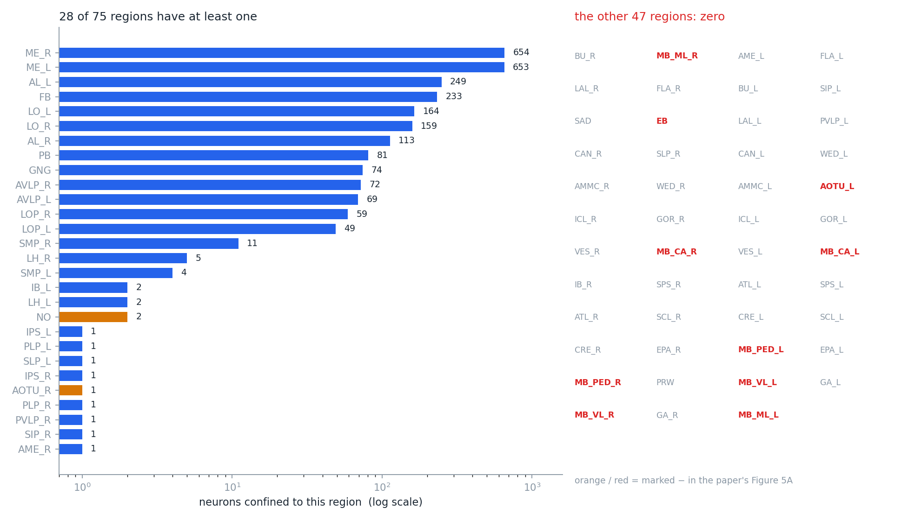
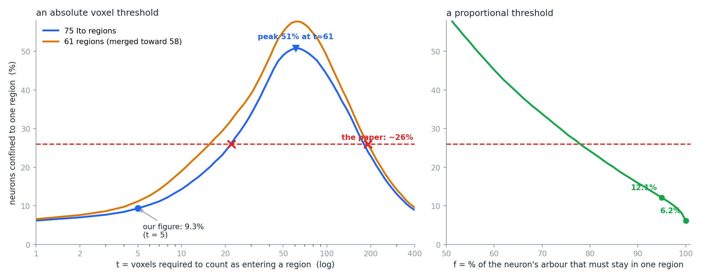
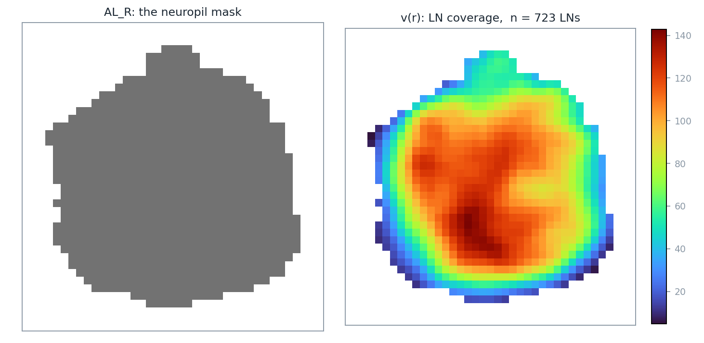
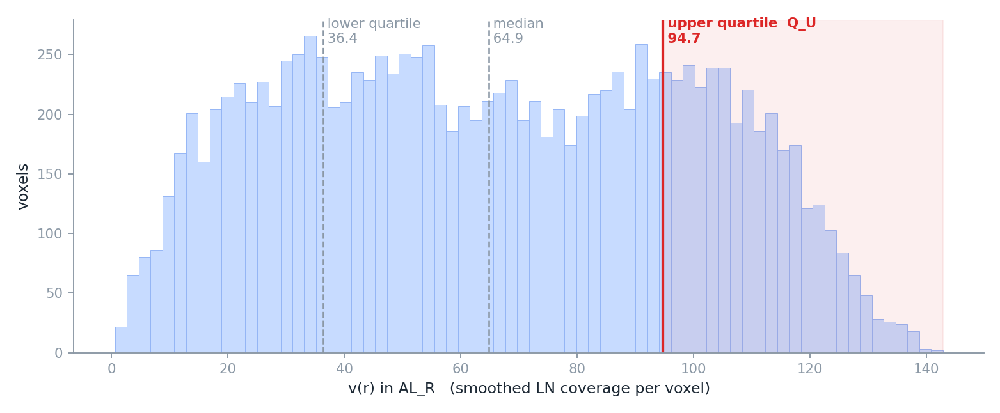
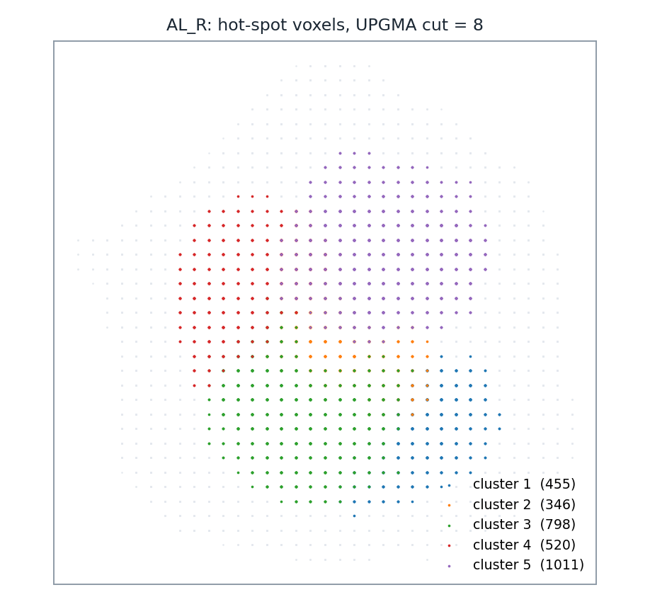
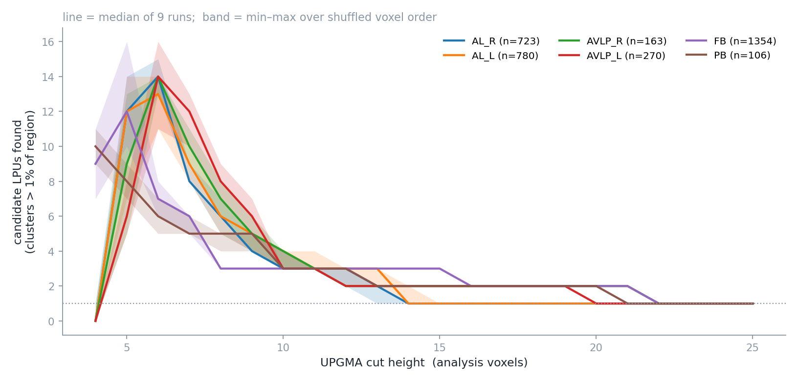

PART 2
論文把兩個條件寫成了七個可執行的步驟——但七個步驟不是全部
七個步驟的輸入不是原始的顯微鏡影像。它預設你手上已經有：
第二項有個先後問題。論文對 LN 的定義是「神經突完全侷限在單一個腦區之內」——哪個腦區？答案是既有的 neuropil。所以整條路是：
這一步不必只停在紙上。本機有兩樣現成的東西：D03 的標準腦分區（Ito 2014 的 75 個腦區）與 D06 的 28,573 顆 FlyCircuit 骨架體素。把「體素只落在單一腦區」的神經元挑出來當 LN 候選，得到 2,664 顆，佔 9.3%，分布在 75 個腦區中的 28 個：

scripts/make_part2_figures.py 算出。資料：D06 的 28,573 顆骨架體素 ＋ D03 的腦區標籤。我們用的是不同的資料量（28,573 顆 vs 論文的約 16,000 顆）、不同的分區（Ito 2014 vs Chiang 的舊分區）、不同的管線，正負號卻對得上。
但先別急著說這證明了什麼——下一段會拆掉這句話的一半。
這件事可以直接量。我們判定「這顆神經元進入了某腦區」的門檻是在該區留下 5 個以上的 2 µm 體素——這個 5 是 D06 建表時定的，論文沒有這個數字，因為論文是目視判讀每一顆神經元的支配範圍（The innervation profiles of every single neuron stored in FlyCircuit were visually inspected and delineated）。我們是拿一個門檻去代替一雙眼睛。

scripts/make_part2_figures.py 算出。因為這個門檻管的不是「要多像 LN 才算 LN」，而是「要多少體素才算踏進一個腦區」。判準是「剛好只踏進一個區」，所以門檻一提高，被剔除的是那些擦邊的第二、第三個區：
所以這條曲線是倒 U 形的，只是我原本那張圖只畫到 40，把後半段藏起來了。門檻再往上，第二階段就開始：連主要的那一區都湊不到門檻，神經元變成「一個區都沒踏進」，也就不算 LN 了。
| 門檻 t | 踏進 0 區 | 踏進 1 區（＝判為 LN） | 踏進 2 區以上 |
|---|---|---|---|
| 5（本頁用的） | 41 | 2,664（9.3%） | 25,868 |
| 20 | 514 | 6,896（24.1%） | 21,163 |
| 61（峰值） | 6,291 | 14,508（50.8%） | 7,774 |
| 200 | 21,277 | 6,519（22.8%） | 777 |
| 400 | 25,899 | 2,548（8.9%） | 126 |
轉折點落在 t ≈ 61 是有道理的：這批神經元落在腦區內的體素數，中位數只有 205（四分位 128 與 372）。門檻一過幾十，就開始把整顆神經元推出局。
它單調、沒有倒 U，但仍然要選一個數：f = 100%（一個體素都不准越界）給 6.2%，f = 95% 給 12.1%，f = 80% 給 24.2%。參數換了一個比較有意義的，但沒有消失。
左圖那兩條曲線之間的垂直距離，就是分區粗細的全部貢獻——很窄。同樣門檻 5 之下，75 區是 9.3%，併成 61 區是 11.1%，只多了 1.8 個百分點。而沿著同一條曲線往右走的落差，動輒二三十個百分點。
所以正確的說法是：9.3% 這個數字主要在描述我們那個 5 體素門檻，不是在描述果蠅腦。
| 腦區 | 門檻 5 | 門檻 10 | 門檻 20 | 門檻 30 |
|---|---|---|---|---|
| MB_CA_R（右萼） | 0 | 1 | 36 | 208 |
| MB_ML_R（右內側葉） | 0 | 0 | 49 | 127 |
| EB（橢球體） | 0 | 5 | 101 | 166 |
| AOTU_L（左前視結節） | 0 | 7 | 13 | 19 |
| MB_PED_R（右柄） | 0 | 0 | 0 | 0 |
門檻 5 時，蕈狀體與 EB 全是 0，跟圖 5A 的「−」完全吻合；門檻 20 時，它們全都變成有數十到上百顆。所以那張圖不能說成「獨立重現了圖 5A」——它重現的是「在門檻＝5 這個設定下，圖 5A 的正負號會被複製出來」。換一個我們自己隨手決定的數字，結論就翻掉。
唯一在四個門檻下都是 0 的是 MB_PED（蕈狀體柄）——那是一束穿過去的軸突，本來就不該有在地神經元。
就名字的數量而言是的，但兩者不是「同一張圖再切幾刀」的關係。
| Chiang 2011 | Ito 2014／D03 | |
|---|---|---|
| 標籤總數 | 58 | 75 |
| 組成 | 29 個名字 × 左右兩份 | 34 個名字 × 左右兩份 ＋ 7 個中線 |
| 不同的名字 | 29 | 41 |
但如 PART 1 第 3 節所列，Chiang 那 29 個名字裡有 14 個在新系統裡找不到對應——因為 Ito 是在一大片本來就沒有明確邊界的「瀰漫性」腦區上重新劃線，不是把舊的區再切開。所以「細」是就平均而言，不是每一處都是舊區的子集。上面那個 61 區的合併，也只能說是「往 58 的方向靠」，不是還原 Chiang 的分區。
這個對不上是有原因的，而原因本身很值得先講清楚，否則後面七個步驟會被誤解成「LPU 是被這條演算法算出來的」。
而它出手成功了幾次？全腦一次。論文寫「In only one case (i.e., VLP), we found two LPUs in one neuropil」。
把 41 拆開來看，就更清楚了。論文自己給了組成：19 對左右成對的 neuropil（×2 ＝ 38）＋ 3 個中央不成對的（PCB、FB、EB）＝ 41。也就是說只有 22 個不同的名字，41 是把左右分開數的結果。
再回頭看我們那 28 個。其中 9 對是左右都有的（ME、LO、LOP、AL、AVLP、SMP、LH、IPS、PLP），其餘 10 個是單側或本來就不成對的。但這兩組數字不能直接比。那 10 個裡只有 FB（233）、PB（81）、GNG（74）算得上有族群，另外 7 個——NO 2、IB_L 2、SLP_L／AOTU_R／PVLP_R／SIP_R／AME_R 各 1——在統計上跟 0 沒什麼差別；連那 9 對裡的 IPS 與 PLP 也都只有各 1 顆。把這些湊成「幾個名字」再拿去跟 41 相減，只會得到一個看起來很整齊、其實沒有意義的數。
我們用的 LN 判準是 n_LPU_touched == 1，門檻是「在某腦區留下 5 個以上的 2 µm 體素才算進入該區」。一顆真正的在地神經元，只要有一小截分枝越過邊界、在隔壁區留下 5 個體素，就會被算成「碰到兩個區」而整顆被丟掉。分區切得越細，邊界越多，被誤殺的就越多——而 Ito 的 75 區正是比 Chiang 的 58 區細。
另一個方向的問題更根本：一個腦區在我們的普查裡是 0，在論文裡卻可以是某個 LPU 的一部分。蕈狀體就是現成的例子。論文的原話是：
LN analysis indicated that the entire MB was one LPU because neither the calyx nor the MB lobe had its own populations of LNs.
讀一次這句的邏輯：蕈狀體的兩個部分都沒有自己的 LN 族群——所以它們合成一個 LPU。我們的表上 MB_CA、MB_PED、MB_VL、MB_ML 四塊全是 0，跟論文說的是同一件事；但在論文那邊，這四個 0 最後貢獻了一對 LPU，不是零個。
令 r(i, j, k) 為腦中的一個體素。每個體素關聯一個整數 v(r)：
把這一步在真實資料上跑出來，是這個樣子：

v(r)，紅色是密、藍色是疏。可以看出密度不是平均分布的——這正是後面幾步要利用的訊息。
由 scripts/make_part2_figures.py 算出。r 都有自己的一個 3×3×3 視窗，視窗以它為中心，彼此大量重疊——相鄰兩格的視窗有 27 格中的 18 格是共用的。格點數目、格子大小都沒有變，變的只是每一格裡放的數字：從「穿過我的纖維數」換成「我和周圍 26 格的平均」。論文的原文是 an average over 3×3×3 = 27 voxels centered at the voxel r，關鍵在 centered at——每一格各有一個中心。
從後面的步驟也看得出來：STEP 3 的門檻是「群的體素數大於該腦區總體素數的 1%」，用的還是原本的格子在數。如果真的把 27 格併成一格，體素總數會直接掉到 1/27。
但有一件事確實變了：能分辨的空間尺度。相鄰體素的值高度相關，小於三格的結構會被抹掉。所以格點的解析度沒變，有效解析度變粗了——這正是這一步的目的，把雜訊抹掉。
上面那張 AL_R 的密度圖，除了 3×3×3 移動平均，還先做了一次真正的併格：make_part2_figures.py 裡 B = 4，把 4×4×4 個格子併成一個分析體素，體素數變成原本的 1/64。
理由是 STEP 3 的距離矩陣——不併格的話，熱點體素數乘進 N(N−1)/2 會直接爆掉記憶體（下面 STEP 3 會再談這件事）。這是我們的工程妥協，不是論文的步驟。代價是：小於一個分析體素的密度結構，在我們的圖上根本不會出現。所以我們掃切割高度掃出來的那些數字，也要放在這個尺度下讀。
論文有兩種說法：
· 補充材料〈Defining an LPU〉：the number of LN fibers passing through the voxel（穿過該體素的纖維條數）
· 圖 S5D(b) 的圖說：the number of repetitive registrations of every single voxel（該體素被重複註冊的次數）
這兩件事不一樣。「一顆神經元的三條分枝都穿過同一格」在前者算 3、在後者算 1。而從二值化的體素影像，你只做得到後者。我們上面那張圖用的也是後者。
對某個 neuropil 內所有的 v(r) 做五數綜合（five-number summary：最小值、第一四分位、中位數、第三四分位、最大值）。取上四分位數 QU，定義熱點集合：
論文沒有說明為什麼選四分位，不過用四分位而不是一個固定的數字，效果是看得見的：門檻是每個腦區各自算的，所以不論哪一區、LN 有多少顆，都恰好留下自己最密的四分之一。我們在六個腦區上實測，留下的比例是 25.0%–25.2%——這是四分位的定義使然，不是巧合。

QU ＝ 24.0，右邊那塊淡紅色區域就是熱點集合 Z。
由 scripts/make_part2_figures.py 算出。對 Z 裡的體素兩兩算歐氏距離，構成距離矩陣：
再用 UPGMA（unweighted pair group method with arithmetic mean，中譯「不加權平均連結法」）把體素分群。體素數超過該 neuropil 總體素 1% 的群，才算候選 LPU。
v(r) 只形成一群，那麼這個 neuropil 本身就是一個完整的 LPU，不需要再細分。否則，每一群各自成為一個候選 LPU。
scripts/make_part2_figures.py 算出。這是整條流程最大的空缺。UPGMA 會給你一棵樹，但要在哪個高度剪斷，決定了你會找到幾個候選 LPU——而論文從頭到尾沒有給這個數字。
這不是雞蛋裡挑骨頭。我們把六個腦區的切割高度從 4 掃到 25，看每個高度會得到幾個候選 LPU：

scripts/make_part2_figures.py 算出，資料同前。| 腦區 | LN 候選數 | 候選 LPU 數的範圍 |
|---|---|---|
| AL_R（右觸角葉） | 113 | 0 – 13 |
| AL_L（左觸角葉） | 249 | 1 – 12 |
| AVLP_R | 72 | 1 – 14 |
| AVLP_L | 69 | 0 – 14 |
| FB（扇形體） | 233 | 1 – 13 |
| PB（前腦橋） | 81 | 1 – 11 |
唯一穩定的區段是切割高度夠大時全部收斂到 1，那正好對應論文「多數 neuropil 就是一個 LPU」的結論。但沒有原則性的理由選那個高度——只有「因為我們知道答案應該是 1」。
scipy 的 pdist 回傳 float64，等於 37 GB（就算改成 float32 也還要 19 GB）。動手前先算一次規模。
在最小的候選群裡，用目視挑一顆纖維侷限在該群內、體積最小的 LN 當作起始的 source。接著：
一、「放大 4 倍」本身就有兩種讀法。原文是 with all voxel units enlarged 4 folds——是每個方向各放大 4 倍（體積變 64 倍），還是體積放大 4 倍（每個方向約 1.6 倍）？兩種讀法差 16 倍，而它直接決定誰會被招募進來。論文沒有再說明，也沒有給這個 4 的推導。
（論文也沒有說為什麼要放大。放大顯然是在容忍纖維之間的空隙與跨樣本的對位誤差——但這是我們的解讀，不是論文寫的。）
二、起始的 LN 是「目視」挑的。這是整條流程唯一明白寫著要人介入的一步。想自動化，就得自己定一條規則（例如：該群內體積最小、且纖維完全落在群內的那一顆），而換一顆種子，招募出來的結果可能不同。
把所有被招募的 LN 疊在一起，去掉它們的初級神經突（primary neurite）與細胞本體（soma），再對剩下的纖維密度場取等值面——這個曲面就是候選 LPU 的估計邊界。
為什麼要去掉細胞本體與初級神經突？因為它們不是「在這一區工作」的部分。細胞本體位在腦的表層，初級神經突只是把本體接到工作區的一條線。把它們算進去，邊界會被硬生生拉出這個區域。
等值面的門檻要設多少，論文沒有寫。而它直接決定候選 LPU 的體積——也就直接影響下一步的 c 值。
一個真正的 LPU，其 LN 纖維應該中間密、周邊相對空（論文說膠質細胞鞘可能也有貢獻）。把候選 LPU 的表面均勻內縮，使內部恰好包含 80% 的體素，記為中心區 A，其餘為周邊區 B。定義：
公式看起來複雜，是因為它把兩個平均寫成了一個分數。中心的平均密度是 ΣAv ÷ NA，周邊的是 ΣBv ÷ NB，兩者相除，分母的 N 就跑到分子去了。c > 2 的意思就是：中心的平均密度要在周邊的兩倍以上。
最後一步是查這個候選區域有沒有自己的長程神經束。
「一條神經束至少由三顆神經元組成」這句話不是論文的定義，也不是演算法的條件。它只出現在圖 7D 與圖 S7 的圖說裡，是在描述他們找到的那些神經束的性質：Each tract is composed of at least three neurons and may actually link more than two LPUs。
論文真正用來把纖維綁成一束的演算法寫在補充材料〈Searching Neural Tracts〉，判準是兩個門檻：兩端的平均終點位置相距小於 30 個體素，且總路徑長度的相似度大於 60%。裡面沒有任何「至少三顆」的規則。
（本課程 PART 1 的名詞表原本也寫成「論文規定」，已一併更正。）
| 有自己的 LN 族群 | 有自己的長程神經束 | 判定 |
|---|---|---|
| 是，而且 c > 2 | 是 | LPU |
| 沒有 LN 族群（c 根本算不出來） | 是 | hub |
| 是，而且 c > 2 | 否 | 不成立——論文寫「a sub-division with c>2 is an LPU if the region has its own long-range tracts」 |
步驟七要用「有沒有神經束」來驗證 LPU。但論文辨識神經束的方法是——
“we clustered neurons based on whether they follow a similar trajectory path linking specific LPUs”（依據神經元是否沿著相似的軌跡路徑連接特定的 LPU 來分群）
也就是說：要找神經束，得先有 LPU；要驗證 LPU，又要先有神經束。論文沒有交代這兩件事的先後。
合理的猜測是步驟七用的是比較寬鬆的「有沒有長程纖維束經過這裡」，而不是那正式的 58 條——但論文沒有這樣寫。實作時你得自己決定先做哪一個。
七個步驟從頭到尾只做一件事：在一個 neuropil 內部，找需不需要再細分。這也正是論文立的前提——LPU 的範圍「等於或小於」一個 neuropil。
但論文實際上還做了反方向的操作：把好幾個 neuropil 合起來，當成一個 LPU。
| 案例 | 論文怎麼處理 | 理由 |
|---|---|---|
| 蕈狀體 | 萼 ＋ 葉 兩個 neuropil → 一個 LPU |
兩者都沒有自己的 LN 族群，所以都不能各自成為 LPU；加上 Kenyon cell 在對外連結上的樣式高度相似 |
| 中央複合體 | 橢球體 ＋ 兩個側三角 三個 neuropil → 一個 LPU |
每一顆橢球體的 LN 把樹突長在同側的側三角、軸突環繞中央的環。原文的語氣是「可以視為（may be considered as）」 |
這兩個合併在圖 5A 那張正負號表上留下了痕跡：表裡同時有 Cal（−）、MB（−）與 Cal＋MB（＋），也同時有 Lat Tri（−）、EB（−）與 Lat Tri＋EB（＋）。那兩列合併項，就是這一步的存在證據。
後果很直接：照著七個步驟跑，你永遠跑不出蕈狀體與中央複合體那兩個 LPU。而這件事會決定最後的總數是不是 41。
把整條流程走完之後，該講清楚的是：這七個步驟不足以讓另一個人重現論文的 41 個 LPU。缺口有六個，分成兩類。
| 在哪一步 | 缺什麼 | 影響 |
|---|---|---|
| STEP 3 | UPGMA 樹的切割高度 | 直接決定找到幾個候選 LPU。上面那張圖顯示同一個觸角葉可以是 1 個、也可以是 13 個 |
| STEP 5 | 等值面的門檻 | 決定候選 LPU 的體積，連帶影響 c 值 |
| STEP 4 | 起始 LN 靠目視挑 | 整條流程唯一明寫要人介入的一步；換一顆種子，招募結果可能不同 |
| 在哪一步 | 含糊在哪 | 影響 |
|---|---|---|
| STEP 1 | v(r) 是數纖維條數，還是數重疊的神經元數 | 補充材料與圖 S5D 的說法不同。從二值化影像只做得到後者 |
| STEP 4 | 「放大 4 倍」是每個方向 4 倍，還是體積 4 倍 | 兩種讀法差 16 倍，直接決定招募到誰 |
| STEP 7 | 神經束與 LPU 的先後 | 找神經束要先有 LPU，驗證 LPU 又要先有神經束 |
再加上前一節那個沒有被寫成步驟的合併，總共七件事需要重跑的人自己決定。
scripts/make_part2_figures.py。PART 3 會把七個步驟完整地接成一條管線，並且逐一面對這七個要自己決定的地方。
scripts/make_part2_figures.py 以 D03 分區與 D06 骨架體素算出；流程圖與示意圖為自行繪製，非論文原圖重製